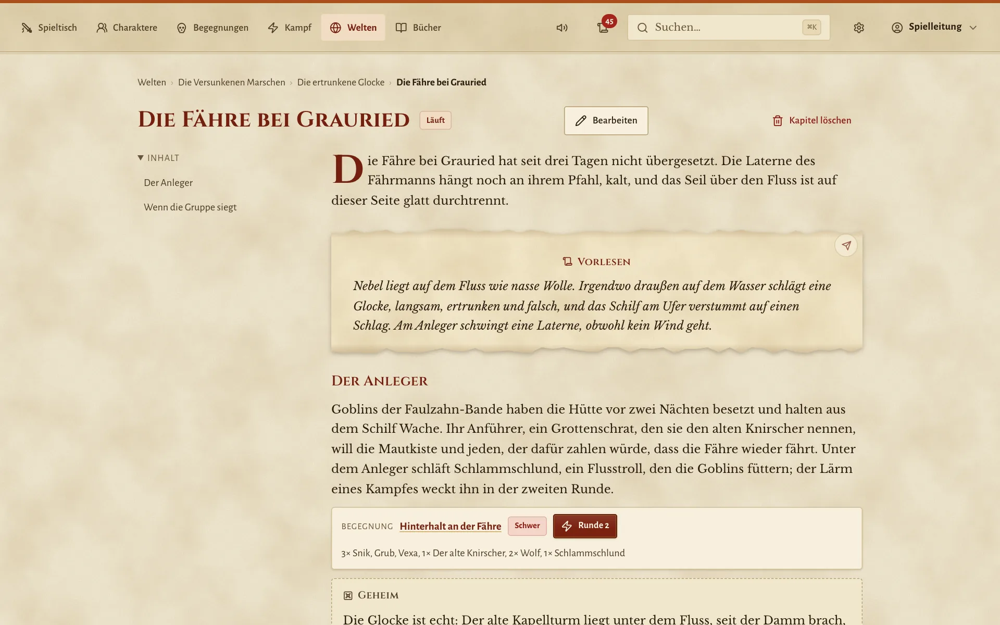
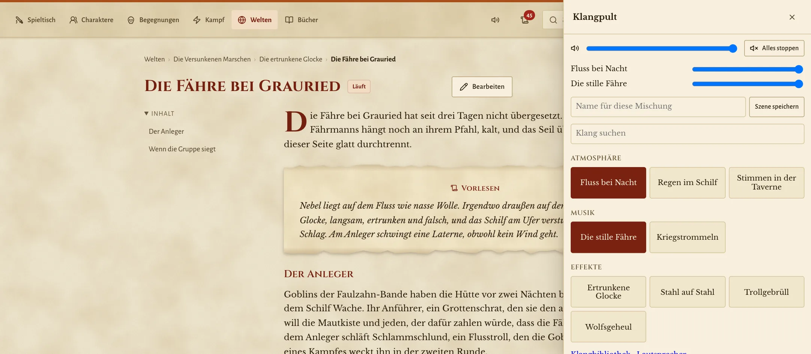
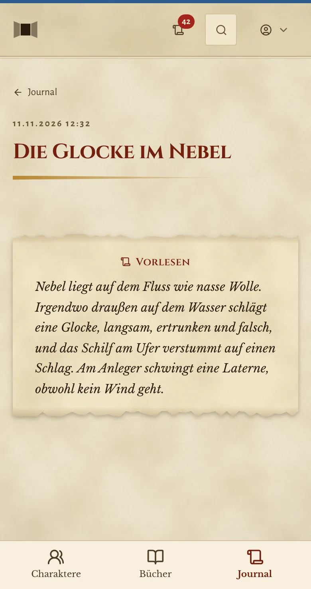
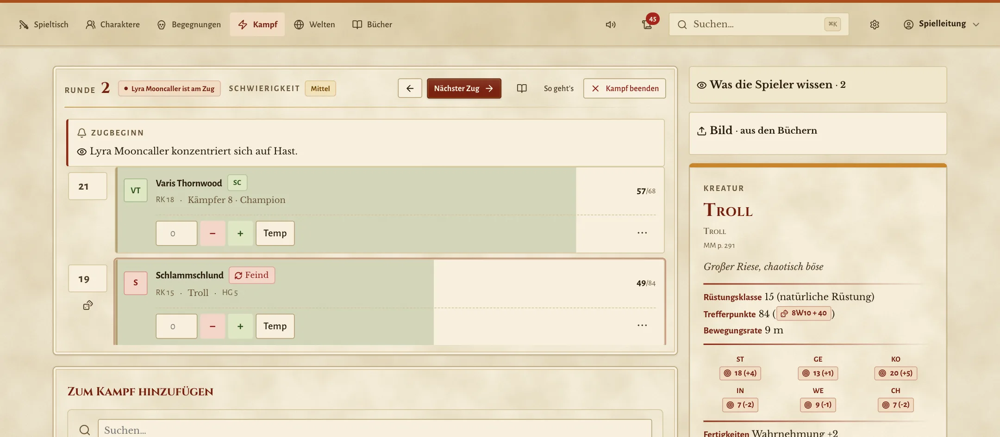
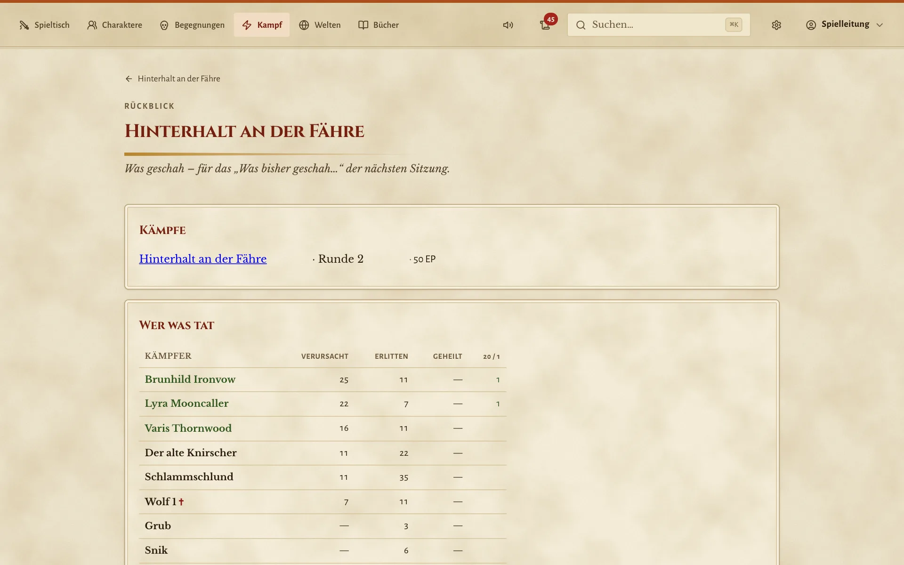
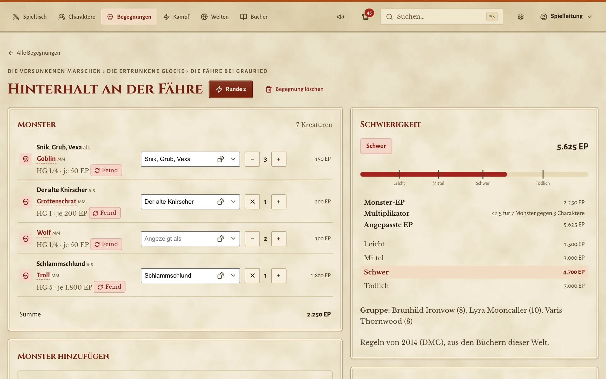
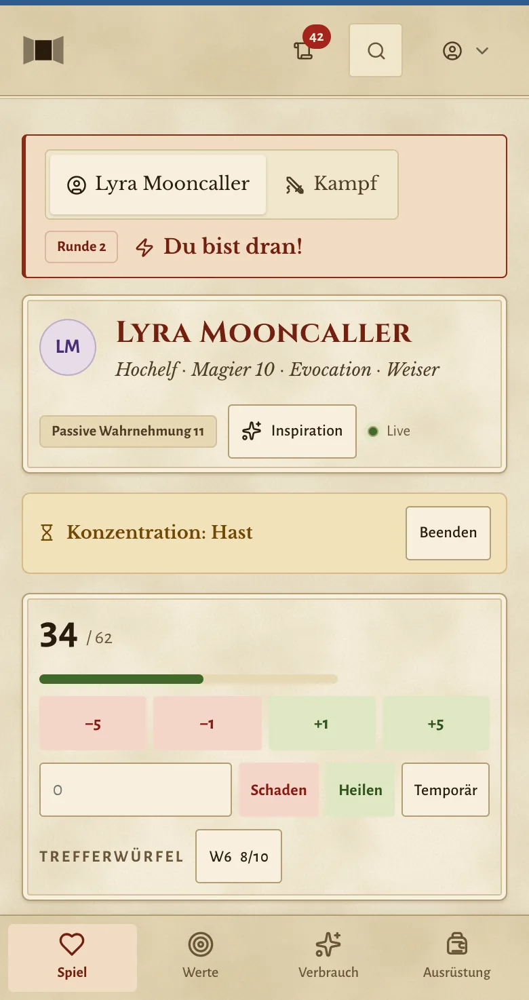
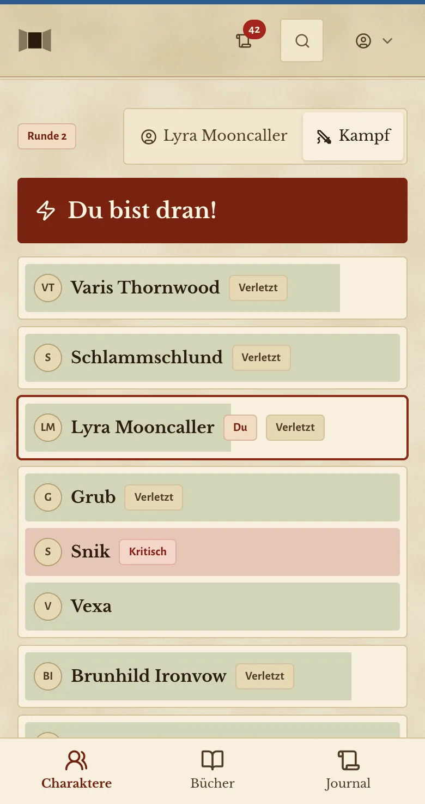
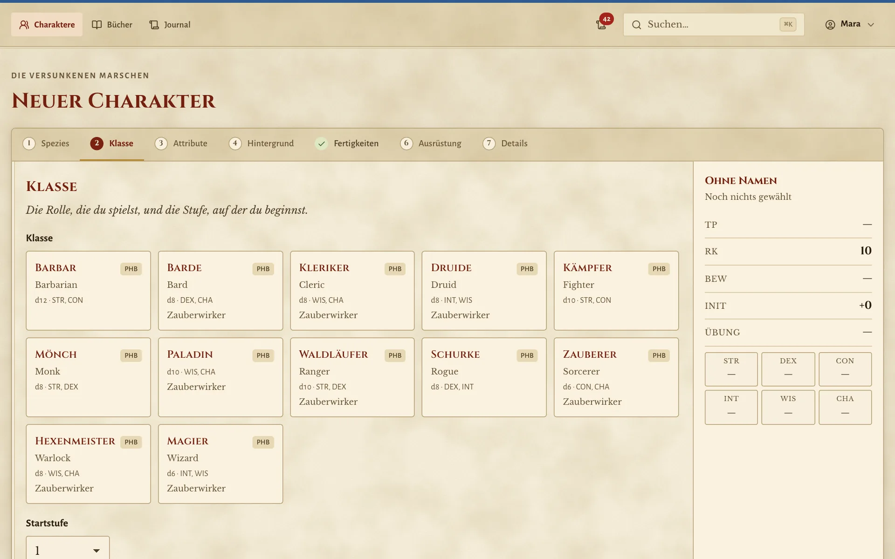
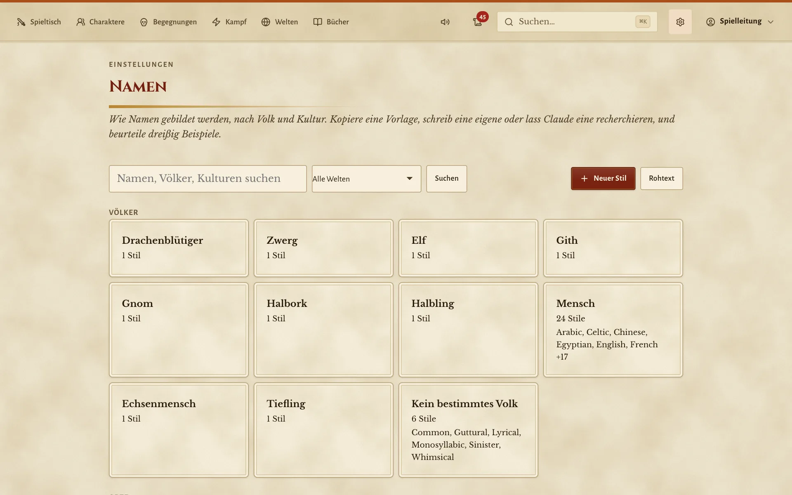

Am Tisch, nicht statt des Tisches
Große Knöpfe, schnelles Tippen, nichts einzurichten vor dem ersten Abend. Paravent liegt neben den Würfeln und den Chips und überlässt euch das Reden.
Für Dungeons & Dragons 5e am echten Tisch
Ein Paravent ist eine Faltwand, genau die, hinter der die Spielleitung sitzt. Paravent hält Notizen, Regeln und den Kampf in Ordnung, damit ihr vom Bildschirm aufschauen könnt, zu euren Leuten. Die Würfel, die Stimmen und die Geschichte bleiben am Tisch.
Warum es das gibt
Angefangen hat es mit einer wöchentlichen Runde und einer Spielleitung, der die Hände ausgingen. Hier ein PDF, dort drei Browser-Tabs, Trefferpunkte in einer Tabelle, die Initiative auf einem Klebezettel. Die Spieler wollten ihre Charaktere auf dem Handy haben, und ein weiteres Abo wollte niemand.
Daraus ist Paravent geworden. Es spielt das Spiel nicht für euch. Es behält den Überblick über das, was eine Runde ausbremst, damit der Abend der Geschichte gehört. Den Drachen beschreibt ihr immer noch selbst, die Gruppe streitet immer noch über den Plan, und entscheiden tun weiter die Würfel.
Es läuft auf einem Laptop, einem Mini-PC oder einem NAS bei euch zu Hause. Niemand meldet sich irgendwo an, nichts geht in eine Cloud. Alles, was ihr schreibt, liegt in einfachen Dateien, die ihr selbst öffnen, kopieren und sichern könnt.
Große Knöpfe, schnelles Tippen, nichts einzurichten vor dem ersten Abend. Paravent liegt neben den Würfeln und den Chips und überlässt euch das Reden.
Nur euer Heimnetz. Die Spielleitung sieht alles, die Spieler sehen, was ihre Figuren wissen können. Ein Schwierigkeitsgrad taucht nie auf einem Handy auf.
Die Bücher, die ihr mitbringt, sind in einem einzigen Suchfeld durchsuchbar. Fahrt in euren Notizen über einen Zauber und lest ihn, ohne die Stelle zu verlieren.
Funktionen
Manches hilft bei der Vorbereitung am Schreibtisch. Das meiste ist für den Moment da, in dem die Gruppe etwas tut, womit ihr nicht gerechnet habt.
Initiative, Trefferpunkte, Zustände, die rundenweise ablaufen, Konzentrationswürfe, Hortaktionen. Monsterangriffe sind einen Knopf entfernt, aber ob sie treffen, entscheidet ihr, und kein Trefferpunkt ändert sich, bevor ihr es sagt.
Initiative und Rettungswürfe würfelt jede Person auf dem eigenen Handy, und einen Augenblick später stehen sie bei euch im Kampf. Sie hören ihre Würfel, sehen „Du bist dran!“ und nie den Schwierigkeitsgrad.
Monsterwürfe kommen bei den Spielern nur als Ergebnis an: Treffer, neun Hiebschaden. Trefferpunkte und Rüstungsklasse eines Gegners bleiben bei euch, und lesen dürfen sie nur die Bücher, die ihr freigebt.
Die Spieler können sich eine Kreatur ansehen und sehen, was ihre Figuren sehen. Was sie im Kampf herausfinden, bleibt hängen, etwa der Troll, dem das Feuer nichts anhaben konnte. Beim nächsten Mal wissen sie es.
Stellt einen Kampf zusammen und seht, wie schwer er für eure tatsächliche Gruppe ist, nach den Regeln von 2014 oder 2024. Würfelt eine Zufallsbegegnung für die Reise oder einen Schatz für den Hort.
Eine Charaktererschaffung für beide Editionen auf jeder Stufe und ein Bogen, der seine Zahlen erklärt. So sieht jede, woher die 17 kommt. Stufen vergebt ihr, wenn die Geschichte es sagt.
Schreibt Kapitel so, wie ihr Notizen schreibt. Obsidian funktioniert. NSC, Orte, Kämpfe und Schätze stehen als Karten im Text, die ihr mitten im Spiel aufklappt. Ihr könnt auch mit einem veröffentlichten Abenteuer anfangen und eigene Ideen dazuschreiben.
Gebt einen Brief, eine Karte oder eine Beschreibung an die Figuren, die sie gefunden haben. Sie bekommen eine eigene Kopie aufs Handy, eure Geheimnisse bleiben draußen, und ihr seht, wer schon gelesen hat.
Jeder Wurf landet mit Würfeln und Boni in einem gemeinsamen Protokoll. Danach gibt es eine Zusammenfassung des Kampfes oder des ganzen Abends, fertig für das „Was bisher geschah“ in der nächsten Woche.
Regen, ein knisterndes Feuer, die Musik für den Endgegner. Startet sie vom Tablet, lasst sie aus der Box im Raum kommen, und lasst ein Kapitel den Lärm der Taverne selbst anstimmen.
Die Gruppe fragt nach dem Namen des Wirts, und ihr habt einen, im Stil des Volkes und der Welt, in der ihr spielt. Goblins heißen wie Goblins, Zwergenhallen wie Zwergenhallen.
Wenn ihr mögt, entwirft Claude ein Abenteuer für eure Gruppe: Kapitel, Figuren und Kämpfe aus euren eigenen Büchern. Es bleibt ein Entwurf, bis ihr es gelesen und angenommen habt.
Die ganze Oberfläche spricht Deutsch, Entfernungen stehen in Metern, und übersetzte Regeltexte fallen auf Englisch zurück, wo noch niemand übersetzt hat.
Ein schlichter Standard oder Tome: Pergament bei Tag, Leder bei Kerzenschein, gesetzt wie die gedruckten Bücher. Jede Person kann ihr eigenes wählen.
Ein Spieleabend
Paravent steht nie in der Mitte des Tisches. Hier hilft es an einem ganz normalen Abend, und das bleibt genau so, wie es immer war.
Am Nachmittag davor
Ihr schreibt das Kapitel für heute als einfachen Text: die Fähre, die Goblins im Schilf, der Troll unter dem Steg. Paravent prüft eure Verweise, bewertet den Hinterhalt für die Gruppe, die ihr wirklich habt, und findet einen Namen für den Grottenschrat.
Am Tisch: eure Ideen und Notizen, so locker, wie ihr mögt.

19 Uhr
Die Spieler öffnen ihre Charaktere auf dem Handy. Ihr lest den Kasten vor, und ein Tipp aufs Klangpult lässt den Regen aus dem Lautsprecher am Regal kommen. Keine Playlist, die ihr suchen müsst.
Am Tisch: eure Stimme, die Knabbereien, die ersten Witze.

19:40 Uhr
Die Zeilen über die versunkene Glocke gehen als Handout an die Spieler. Sie landen im Journal auf ihren Handys und bleiben dort, damit sich niemand bis nächsten Monat jedes Wort merken muss.
Am Tisch: die Spieler, die es sich gegenseitig vorlesen.

20:15 Uhr
Die Kampfverwaltung hält Reihenfolge, Trefferpunkte und Konzentration fest, der Wertekasten des Trolls gleich daneben. Die Spieler würfeln auf dem Handy, oder mit echten Würfeln, und ihr tippt die Zahl ein. Ob ein Schlag trifft, entscheidet immer ihr.
Am Tisch: echte Würfel, die Karte, die Miniaturen, der Jubel.

Mitternacht
Die Zusammenfassung zeigt, wer den großen Treffer gelandet hat, wer zu Boden ging und was der Kampf wert war. In einer Minute wird daraus eine Notiz für die nächste Runde, dann klappt ihr den Laptop zu.
Am Tisch: die Geschichten, die sich alle auf dem Heimweg erzählen.

Wie es denkt
Paravent hilft Menschen, gemeinsam in einem Raum zu spielen. Es hält die Buchhaltung aus dem Weg, damit der Abend der Geschichte gehört und den Leuten am Tisch.
Hat der Pfeil getroffen? Wer stand im Feuer? Ist es Zeit für die nächste Stufe? Paravent bietet die Zahlen und einen Knopf. Die Entscheidung bleibt bei euch.
Zu Beginn eines Zuges erinnert es an den Aufladewurf und die Hortaktion. Es zeigt eine Resistenz, statt den Schaden heimlich zu halbieren. Nichts passiert hinter eurem Rücken.
Zwei Drittel aller Zaubernamen gibt es in mehr als einem Buch. Wählt eure, das Spielerhandbuch von 2014 oder das von 2024, und jeder Verweis findet die richtige Fassung. Ein Buch, das niemand besitzt, bleibt außen vor und sagt das auch.
Die Regeln, die ihr mitbringt, werden nur gelesen. Alles, was ihr erschafft, liegt woanders. Tauscht die Bücher gegen eine neue Ausgabe, und eure Kampagne bleibt unberührt.
Die Datei weiß, was gewählt wurde. Rüstungsklasse und Trefferpunkte werden jedes Mal neu berechnet, und eine korrigierte Regel bringt jeden Bogen auf einmal in Ordnung.
Deutscher Text berührt nie die Regeln darunter. Ein halb übersetztes Buch ist völlig normal, und eine Übersetzung zu entfernen ist immer gefahrlos.
Was Claude schreibt, ist ein Entwurf. Es erscheint nirgends in eurem Spiel, bis ihr es gelesen und angenommen habt.
Bilder
Vom Tablet der Spielleitung und vom Handy einer Spielerin, hell und dunkel. Ein Klick zeigt ein Bild größer.





Die Bildschirmfotos zeigen Kreaturen aus dem System Reference Document 5.1 von Wizards of the Coast LLC, unter der Lizenz Creative Commons Namensnennung 4.0.
Unter der Haube
Kein Datenbankserver, keine Cloud, nichts zu kompilieren. Ein kleiner Python-Server und einfache Dateien auf einer Platte, so etwas läuft auch in zehn Jahren noch.
Neues
Die letzten Änderungen, so wie sie gemacht wurden, darum auf Englisch. Stand: 11. November 2026 .
Fragen
Kurze Antworten, bevor ihr irgendetwas einrichtet.
Nein, und das wird es nie. Du erzählst die Geschichte, die Spieler würfeln, womit sie mögen, und du entscheidest, was passiert. Paravent hält Zahlen, Notizen und Handouts in Ordnung, damit du öfter vom Bildschirm aufschauen kannst.
Ein Gerät, das beim Spielen läuft: ein Laptop, ein Mini-PC oder ein NAS, mit Python oder Docker. Alle anderen brauchen nur einen Browser im selben Netz, auf Handy, Tablet oder Laptop. Nichts aus einem App Store.
Paravent bringt keinerlei Spielinhalte mit. Es liest Regeldaten im 5eTools-Format aus einem Ordner auf eurem eigenen Gerät und verändert sie nie. Welche Daten dort liegen, entscheidet ihr, so wie ihr entscheidet, welche Bücher im Regal stehen.
Auf eurem Gerät, in einem Ordner: Welten, Abenteuer, Charaktere, Kämpfe, alles als lesbare Markdown- und JSON-Dateien. Es gibt kein Konto bei uns, keine Cloud und kein Tracking. Auf Wunsch packt Paravent diesen Ordner jede Nacht in ein Zip.
Nur euer eigenes Netz. Die Handys sprechen mit dem Gerät, auf dem Paravent läuft, ins Internet geht nichts. Diese Verbindung braucht es aber: Einen Offline-Modus gibt es nicht.
Eine einfache Anmeldung, die du für jede Person anlegst. Sie sehen ihre eigenen Charaktere, den Kampf von ihrer Seite und was du mit ihnen teilst, nie deine Notizen oder die Trefferpunkte eines Monsters.
Beide. Jede Welt nennt die Bücher, mit denen ihr spielt, und das entscheidet die Edition. Wer beide besitzt, kann sie mischen, und Paravent zeigt immer, aus welchem Buch eine Regel stammt.
Ja. Die ganze Oberfläche spricht Deutsch, Entfernungen stehen in Metern, und Regeltexte lassen sich Absatz für Absatz übersetzen. Was noch niemand übersetzt hat, bleibt englisch, und jeder Verweis funktioniert weiter.
Nichts. Paravent ist frei und quelloffen. Kosten kann nur, was ihr zusätzlich einschaltet: Die Claude-Funktionen nutzen euer eigenes Claude-Konto oder einen API-Schlüssel, bezahlt an Anthropic. Ohne sie lässt Paravent diese Funktionen einfach aus.
Ja. Paravent steht unter der MIT-Lizenz: Ihr dürft es nutzen, verändern und weitergeben, solange der Urheberrechtshinweis dabei bleibt. Der Quelltext liegt auf GitHub. Die Lizenz gilt für das Programm, nicht für die Regeldaten, die ihr mitbringt.
Ja. Abenteuer sind einfaches Markdown, geschrieben in Paravent oder in jedem Editor, Obsidian eingeschlossen. Eigene Kreaturen entstehen im Kreaturenbaukasten, und Homebrew im 5eTools-Format steht neben den Büchern und funktioniert wie sie.
Rechtliches
Paravent kommt ohne Spielinhalte. Keine Zauber, keine Monster, keine Regeltexte, keine Abenteuer. Welche Daten eine Runde nutzt, entscheidet, wer es betreibt, genau wie bei einer Textverarbeitung und den Büchern im eigenen Regal.
Paravent ist ein unabhängiges Open-Source-Projekt und kostenlos nutzbar. Es steht in keiner Verbindung zu Wizards of the Coast oder dem 5eTools-Projekt und wird von ihnen weder unterstützt noch gefördert. Dungeons & Dragons und D&D sind Marken von Wizards of the Coast LLC. Alle anderen Namen gehören ihren Inhabern.
Diese Seite setzt keine Cookies und verwendet kein Tracking, keine Statistik und keine fremden Schriften. Impressum und Datenschutz.